MATE Desktop anpassen
Zum Verständnis dieses Artikels sind folgende Seiten hilfreich:
 Über Geschmack lässt sich bekanntlich nicht streiten. Genauso ist es mit dem Aussehen einer grafischen Oberfläche. Was dem einen gefällt, ist dem anderen ein Dorn im Auge. Unter anderem aus diesem Grunde lässt sich unter MATE so gut wie alles ändern: jedes Detail vom Bildschirmhintergrund über die Fensterrahmen bis zu den Bedienelementen.
Über Geschmack lässt sich bekanntlich nicht streiten. Genauso ist es mit dem Aussehen einer grafischen Oberfläche. Was dem einen gefällt, ist dem anderen ein Dorn im Auge. Unter anderem aus diesem Grunde lässt sich unter MATE so gut wie alles ändern: jedes Detail vom Bildschirmhintergrund über die Fensterrahmen bis zu den Bedienelementen.
Fenster¶
Sämtliche Einstellungsmöglichkeiten zur Optik von Fenstern (Rahmen, Inhalte, Farben, Symbole usw.) sind in einem Dialog unter "System -> Einstellungen -> Darstellung -> Erscheinungsbild" zusammengefasst.
Design¶
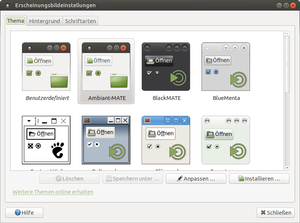 Bei der Installation von Ubuntu MATE werden eine Reihe kompletter Designs (Themes) wie z.B. "Ambient-MATE" installiert. Diese umfassen vom Fensterrahmen über das Aussehen der Bedienelemente wie Schaltflächen und Bildlaufleisten bis hin zu den Symbolen auf dem Desktop alle Anpassungsmöglichkeiten des MATE-Desktops. Das zu verwendende Design kann man direkt unter "System -> Einstellungen -> Darstellung -> Erscheinungsbild" auswählen.
Erweiterte Einstellungen¶
Neben den Designs, die vorinstalliert bzw. aus den Paketquellen nachinstalliert werden können, gibt es unzählige Designs, die man aus dem Internet herunterladen und installieren kann. Bevor man damit loslegt, sollte man verstehen, wie sich so ein Design zusammensetzt, sonst verliert man schnell den Überblick.
Ein MATE-Desktop-Design besteht letztendlich aus drei Teilen. Der "Fensterinhalt" beschreibt die Bedienelemente, also die Form und das Aussehen der Schaltflächen und Bildlaufleisten. Der "Fensterrahmen" definiert alles, was um ein Fenster herum angezeigt wird, also die Kopfleiste und den Rahmen um das Fenster. Übrig bleiben die "Symbole" in Schaltflächen und auf dem Desktop für Laufwerke und bekannte Anwendungen.
Hierzu muss man anmerken, dass man auf den einschlägigen "Theme"-Webseiten im Internet selten "vollständige" Designs findet. Oftmals beinhaltet ein "Theme" nur die Fensterrahmen oder nur den Fensterinhalt oder eben das Icon-Design. Die heruntergeladenen Designs kann man dann nach dem eigenen Geschmack kombinieren.
Alle diese Teile lassen sich auch getrennt von den MATE-Designs einzeln auswählen. So kann man ein individuelles Design zusammenstellen. Dazu muss man aus dem Designmanager "System -> Einstellungen -> Darstellung -> Erscheinungsbild" die individuellen Konfigurationsmöglichkeiten unter "Anpassen" öffnen.
Fensterinhalt¶
Der Fensterinhalt besteht im Prinzip wieder aus zwei Teilen: erstens einer GTK-Engine und zweitens einem GTK-Design, das die Engine nutzt. GTK+ selbst ist eine Komponentenbibliothek zur Darstellung von Bedienelementen.
Als Benutzer kommt man eigentlich nur mit den GTK-Designs an sich in Berührung, da die wichtigsten Engines automatisch bei der Installation von Ubuntu MATE mitinstalliert werden. Weitere Informationen und eine Gegenüberstellung populärer Alternativen gibt es im Artikel GTK Engines.
Das GTK-Design wird auf verschiedenen Webseiten immer wieder anderslautend beschrieben. Sucht man nach individuellen GTK-Designs, so sollte man auf GNOME-look.org  nach "Fensterinhalt", "Application" bzw. "GTK 2.0" und Co. suchen. Diese Kategorien beinhalten immer GTK-Designs.
nach "Fensterinhalt", "Application" bzw. "GTK 2.0" und Co. suchen. Diese Kategorien beinhalten immer GTK-Designs.
Installiert man ein Design und die Schaltflächen sehen nicht so aus, wie sie aussehen sollten, so fehlt wahrscheinlich die vom Design benötigte GTK-Engine. Auf diesen Umstand wird man im Designdialog durch eine Warnmeldung hingewiesen.
Farben¶
Manche Designs – dazu gehören üblicherweise die vorinstallierten Designs – lassen sich in der Farbe anpassen. So kann man am leichtesten die Desktop-Umgebung an die eigenen Bedürfnisse und Wünsche anpassen. Benutzt man selbstinstallierte Designs, so sind diese Einstellungsmöglichkeiten oft deaktiviert. In diesem Fall unterstützt das aktuelle Design keine selbst definierten Farben.
Fensterrahmen¶
Der Fensterrahmen wird durch einen Fenstermanager erzeugt. Dieser ist auch für Funktionen wie das Minimieren oder Maximieren sowie das Schließen von Fenstern zuständig. MATE nutzt dafür Marco.
Symbole¶
Schließlich gibt es das Symbol-Design. Diese Designs kommen immer in ganzen Sammlungen ("icon sets") vor. Das bedeutet, dass ein Symbol-Design immer alle wichtigen Icons enthält. Fehlende Icons werden aus dem GNOME-Standard-Design übernommen, so dass keine Lücken auftreten, wenn mal ein Symbol fehlt. Archive mit Symbol-Designs findet man in den Kategorien "Symbole" oder "Icons".
Mauszeiger¶
Auch der Mauszeiger lässt sich anpassen. Zahlreiche Designs lassen sich über die Paketverwaltung installieren, noch mehr lassen sich aus dem Internet herunterladen und von Hand installieren. Weiterführende Informationen zu diesem Thema findet man in Mauszeiger)
| 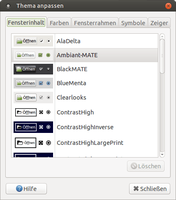 |
| Fensterinhalt |
| 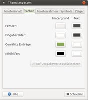 |
| Farben |
| 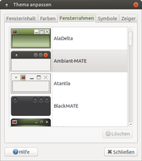 |
| Fensterrahmen |
| 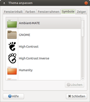 |
| Symbole |
| 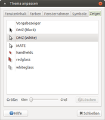 |
| Mauszeiger |
Fensterschaltflächen links anordnen¶
Es gab in der Vergangenheit hitzige Diskussion über die Entscheidung der Ubuntu-Entwickler, die Schaltflächen zum Minimieren, Maximieren und Schließen eines Fensters ab Ubuntu 10.04 oben links anzuordnen, wie es auch beim Mac der Fall ist. Ubuntu MATE bringt die insbesondere bei Windows-Umsteigern beliebte Variante oben rechts zurück.
Wer sich inzwischen so an den Ubuntu-Standard gewöhnt hat, der kann die Schaltflächen sehr einfach wieder auf die linke Seite bringen. Dazu öffnet man den dconf-Editor [2] und navigiert zunächst in der linken Spalte zu "org.mate.Marco.general". Dann findet man im rechten Teil des Fensters den Schlüssel "button_layout". Der Standardwert des Schlüssels lautet "menu:minimize,maximize,close". Der Doppelpunkt steht hierbei für die Trennung der linken Ecke von der rechten. Durch Doppelklick auf den Wert lässt sich dieser ändern. Um das alte Layout wiederherzustellen, muss der Schlüsselwert "close,minimize,maximize:" lauten. Mit der Eingabetaste bestätigen, anschließend sind die Schaltflächen wieder links.
Ein weiterer einfacher Weg die Position der Fensterschaltflächen zu ändern führt über "System -> Einstellungen -> Darstellung -> Fenster -> Reiter Allgemein -> Titelleistenknöpfe"
Installation eigener Themen¶
Hinweis:
Auf GNOME-look.org und Co. finden sich hunderte, wenn nicht tausende von Designs. Nicht jeder Designbauer hat die Kompetenz, ordentliche Designs zu erstellen. So kommt es vor, dass sich das Design nicht auf die beschriebene Art und Weise installieren lässt. In solch einem Fall sollte man das Archiv von Hand entpacken und die hoffentlich beigelegte Dokumentation lesen.
Weiterhin kann es zu Problemen mit der Darstellung von Programmen oder gar zu Abstürzen kommen. Verhält sich ein Programm komisch, dann sollte man das Design auf den Standard von Ubuntu MATE zurücksetzen und versuchen, das Problem zu reproduzieren. Sollte sich das System mit beispielsweise "Ambient-MATE" als Design korrekt verhalten, dann lässt sich der Fehler wohl auf das verwendete Design zurückführen.
Last not least sollte auch beachtet werden, dass man – wie immer bei der Installation fremder Software – Vorsicht walten lassen sollte. Zu dieser Problematik siehe auch: Schadprogramm in .deb-Paket von gnome-look.org  .
.
Für den eigenen Benutzer¶
Findet man ein Fenster-, Rahmen- oder Symbol-Design, das einem gefällt und das man verwenden möchte, so speichert man es am besten erst einmal ab. Um die heruntergeladenen Designs zu installieren, öffnet man den Design-Manager, klickt auf "Thema installieren", wählt den Ordner aus, in dem man die Designs abgespeichert hat, und wählt schließlich "Installieren". Diesen Vorgang wiederholt man so lange, bis alles von Interesse installiert ist. Alternativ kann man die Design-Archive (sprich thema.tar.gz) auch einfach per Drag&Drop aus Caja in den Design-Manager ziehen. Dort werden sie dann automatisch installiert. In den "Themendetails" findet man drei Reiter mit den Namen der eben genannten Rubriken. In jedem Reiter kann man Einstellungen vornehmen und den Desktop an die eigenen Wünsche anpassen.
Für alle Benutzer des Systems¶
Installiert man ein Design als Benutzer, so wird das Design nicht global für alle Benutzer des Systems installiert, sondern nur im Homeverzeichnis des aktuellen Benutzers. Designs für den Fenstermanager und die GTK-Engines werden nach ~/.themes und Mauscursor sowie Symbole nach ~/.icons/ kopiert. Anderen Benutzern des Systems stehen so installierte Designs nicht zur Verfügung.
Dies hat einen unangenehmen Nebeneffekt. Wählt man ein individuell installiertes Designs aus und öffnet eine Anwendung mit Root-Rechten, also mittels gksudo, so kann die Anwendung das vom Benutzer ausgewählte und installierte Design nicht finden, da es ja nur im Homeverzeichnis liegt und nicht global zur Verfügung steht. Stattdessen wird ein GTK-Standard-Design genutzt.
Sollte man sich daran stören oder Designs allen Benutzern des Systems zur Verfügung stellen wollen, so kann man die gewünschten Designs einfach von ~/.themes bzw. ~/.icons/ mit Root-Rechten nach /usr/share/themes bzw. nach /usr/share/icons verschieben. Die Designs stehen danach systemweit zur Verfügung.
Alternativ kann man die aktuell im Benutzerverzeichnis installierten Designs und Symbole mit den folgenden Befehlen [1] ebenfalls systemweit verfügbar machen, in denen die eigenen Themen in das Verzeichnis des Root-Benutzers verlinkt werden. Die Designs stehen dann jedoch nicht systemweit für andere Benutzer des Systems zur Verfügung:
sudo ln -s ~/.themes /root/.themes sudo ln -s ~/.icons /root/.icons
Hintergrundbild¶
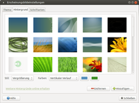
Jedes Bild lässt sich bei Ubuntu MATE als Desktop-Hintergrund ("wallpaper") nutzen. Sofern man noch kein passendes Hintergrundbild für den Desktop gefunden hat, so kann man beispielsweise einfach auf einer der weiter unten genannten Seiten stöbern. Es empfiehlt sich, für die Hintergrundbilder den Ordner Bilder im Homeverzeichnis zu nutzen und die gesammelten Hintergrundbilder dort zu speichern.
Will man ein Hintergrundbild allen Benutzern des Systems zur Verfügung stellen, so muss man es mit Root-Rechten nach /usr/share/backgrounds/ kopieren. Viele weitere Hintergrundbilder lassen sich auch direkt aus den Paketquellen installieren: Ubuntu-Wallpaper.
Um einen Hintergrund auszuwählen, öffnet man "System -> Einstellungen -> Darstellung -> Erscheinungsbild -> Reiter Hintergrund". Alternativ gelangt man über "Rechtsklick auf den Desktop -> Hintergrund des Schreibtischs ändern" in dieses Menü. Hier kann man über die Schaltfläche "Hinzufügen" auch eigene Bilder zu den zur Auswahl stehenden hinzufügen. Alternativ kann man ein eigenes Bild aus dem Dateimanager Caja in diesen Dialog hineinziehen.
Anschließend kann man noch die Desktop-Farbe auf das Bild abstimmen und einstellen, wie das Bild den Bildschirm ausfüllen soll. Arbeitet man gerne mit mehreren virtuellen Desktops, so besteht die Möglichkeit, für jeden Desktop ein eigenes Wallpaper zu setzen (siehe Desktop-Hintergrund).
Schriftarten¶
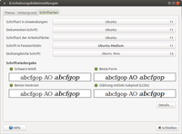 Unter "System -> Einstellungen -> Darstellung -> Erscheinungsbild -> Reiter Schriften" lassen sich die zu nutzenden Schriftarten und -größen festlegen. Für viele Elemente kann man die Schrift individuell einstellen. Außerdem lassen sich verschiedene Einstellungen vornehmen, wie Schriften überhaupt angezeigt werden sollen.
Dabei sind die Einstellungen zur Schriftwiedergabe unter "Details" extrem wichtig. Manch ein Benutzer bevorzugt Schriften, die ordentlich geglättet wurden, andere wollen "scharfe" Schriften. Hier muss man eventuell ein bisschen Zeit investieren, bis man die für sich passenden Einstellungen gefunden hat (siehe auch Schriften).
Desktop-Symbole¶
Viele Linux-Nutzer mögen einen "sauberen" Desktop ohne Symbole. Dem stimmen jedoch ehemalige Windows-Benutzer meist nicht zu. Möchte man die klassischen vier Symbole für "Eigene Dateien", "Arbeitsplatz", "Papierkorb" und "Netzwerkumgebung" aktivieren, so muss man den Konfigurationseditor dconf [2] starten und dort unter "org.mate.caja.desktop" die Optionen:
"home-icon-visible" (Persönlicher Ordner)
"computer-icon-visible" (Rechner)
"trash-icon-visible" (Müll)
"network-icon-visible" (Netzwerkserver)
aktivieren. Schneller und einfacher geht es mit MATE Tweak.
MATE zeigt außerdem in der Voreinstellung alle eingebundenen Laufwerke als Symbol auf dem Desktop an. D.h. selbst wenn man nie Dateien auf dem Desktop ablegt, sieht man eventuell doch Symbole auf dem Desktop. Möchte man nur diese Icons entfernen, so muss man den Konfigurationseditor dconf [2] starten und dort die Option "volumes_visible" unter "org.mate.caja.desktop" deaktivieren. Allerdings werden dann auch keine Wechseldatenträger wie USB-Sticks oder USB-Festplatten mehr auf dem Desktop dargestellt. Diese erscheinen dann nur noch innerhalb des Dateimanagers Caja. Eine grafische Konfigurationsalternative bietet MATE Tweak.
Klänge¶
Systemklänge¶
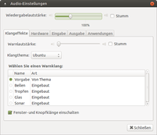
Manche Benutzer bevorzugen hörbare Rückmeldungen ("audible feedback") auf ihre Aktionen. Unter MATE kann man so gut wie jede Aktion von einem Klang begleiten lassen. Es lassen sich auch Klangthemen - also eine Sammlung verschiedener Klänge - erstellen. Die Klänge ("sounds") kann man unter "System -> Einstellungen -> Geräte -> Klang" einstellen. Dort lässt sich auch angeben, welches Audio-Gerät für die Ausgabe dieser Systemklänge genutzt werden soll.
Die Tondateien müssen in den Formaten .wav oder .ogg vorliegen, um sie dort einbinden zu können. Möchte man eigene hinzufügen, so sollte man sie am besten mit Root-Rechten nach /usr/share/sounds/ kopieren.
Panel¶
Es gibt eine Vielzahl von Möglichkeiten, die Panelleiste von MATE zu konfigurieren. Hierzu klickt man mit der rechten Maustaste ( ) auf eine der Leisten und wählt "Eigenschaften" aus. Hier kann nun eingestellt werden, wie die Ausrichtung der jeweiligen Leiste sein soll - sprich horizontal oder vertikal. Außerdem gibt es die Möglichkeit, die Leistenausdehnung zu regulieren sowie ihre Größe zu verändern.
) auf eine der Leisten und wählt "Eigenschaften" aus. Hier kann nun eingestellt werden, wie die Ausrichtung der jeweiligen Leiste sein soll - sprich horizontal oder vertikal. Außerdem gibt es die Möglichkeit, die Leistenausdehnung zu regulieren sowie ihre Größe zu verändern.
Wer mag, kann auch die Option "automatisch verbergen" wählen. Ebenso ist es möglich, eine passende Farbe auszuwählen und durch den Schieberegler einzustellen, ob und wie transparent die Leiste sein soll. Alternativ kann ein Bild gewählt werden.
MATE-Terminal¶
Hintergrund¶
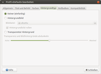
Um im Terminal-Fenster die Transparenz zu verwenden, muss man das MATE-Terminal starten, dort "Bearbeiten -> Profileinstellungen -> Hintergrundtyp" (oder Effekte) auswählen und die Option "Transparenter Hintergrund" aktivieren. Mit einem Schieberegler kann die Stärke der Transparenz angepasst werden. Außerdem kann hier ein separates Bild bzw. eine bestimmte Farbe für den Hintergrund eingestellt werden.
Sind Desktop-Effekte bzw. Compositing aktiviert, so benutzt das Terminal "echte" Transparenz, d.h. man sieht den Inhalt von Fenstern, die sich hinter dem Terminal befinden.
Schriftfarbe¶
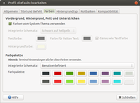
Je nachdem, welchen Hintergrund das Terminal hat, können bestimmte Farben nicht mehr so gut erkannt werden. Abhilfe kann geschaffen werden, wenn unter "Bearbeiten -> Profile... -> Profil wählen -> Bearbeiten -> Farben" die nötigen Änderungen vorgenommen werden. Hier stehen verschiedene vorbereitete Farbpaletten zur Verfügung. Wer will, kann alle Farben individuell anpassen.
MATE Tweak¶
MATE Tweak bietet schnellen Zugriff auf einige häufig gefragte Einstellungen wie die Anzeige von Desktop-Symbolen oder das Ein- und Ausschalten des integrierten Composite-Managers. Zu finden ist das Programm über "System -> Einstellungen -> Darstellung -> MATE Tweak".
MDM¶
Während MATE den Displaymanager MDM bereitstellt, nutzt Ubuntu MATE wie die anderen Ubuntu-Varianten LightDM. Dieser ist dafür verantwortlich, dass Benutzer sich anmelden und unterschiedliche Desktop-Umgebungen auswählen können. So kann man hier zum Beispiel auswählen, ob MATE, KDE oder GNOME (soweit installiert) gestartet werden soll. Lange Zeit existierte kein grafisches Konfigurationswerkzeug für LightDM. Ab Ubuntu 15.04 kann auf den vorinstallierten LightDM-GTK+ Einstellungseditor zurückgegriffen werden.
Desklets¶
Desklets sind kleine Programme, die beliebig auf dem Desktop platziert werden können. Im Lauf der Jahre wurden verschiedene Programme entwickelt, die diese Aufgabe übernehmen. So kann man beispielsweise eine große Uhr auf den Desktop legen, das aktuelle Wetter oder wichtige Systeminformationen anzeigen oder sich über eingehende E-Mails benachrichtigen lassen. Weitere Informationen im Artikel Desklets.
 Übersichtsartikel
Übersichtsartikel- Erstellt mit Inyoka
-
 2004 – 2017 ubuntuusers.de • Einige Rechte vorbehalten
2004 – 2017 ubuntuusers.de • Einige Rechte vorbehalten
Lizenz • Kontakt • Datenschutz • Impressum • Serverstatus -
Serverhousing gespendet von